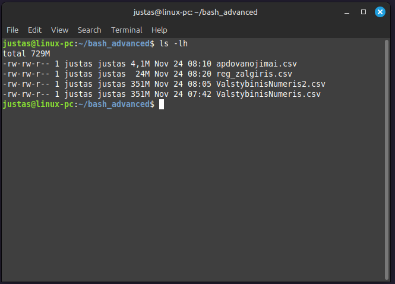
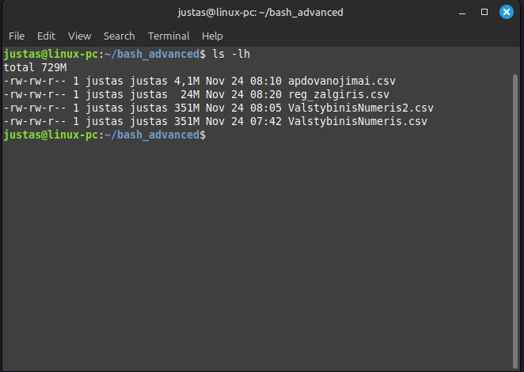

7 BASH pažengusiems
7.1 Įvadas
Praėjusiame skyriuje susipažinai su įvairiomis CLI (command line interface) komandomis, suteikiančiomis pagrindinius įrankius darbui su shell aplinka. Išmokai naudoti echo, cat, head, tail, less, wc, touch, mkdir, cp, mv, rm, grep, cut, sort, sed, taip pat operatorius >, >>, bei |. Šios komandos leidžia dirbti su failais, kurti direktorijas, atlikti filtravimą pagal eilutes ir stulpelius bei automatizuoti užduotis.
Šiame skyriuje dar gilinsimės į failų valdymą ir apdorojimą. Sužinosi:
Pagalbos komandas - mokysiesi naudotis
help,manirtldr, kad greitai rastum informaciją apie komandas.Tinklo komandas - išmoksi naudoti
ping,curlirwget, kad galėtum patikrinti ryšį bei atsisiųsti duomenis.Kaip ieškoti failų - naudosi
find,locateirwhereis, kad efektyviai surastum failus ir suprastum jų vietą.Teksto apdorojimą - įgysi žinių apie
awk,pasteirsed, kad galėtum analizuoti ir jungti duomenis.Failų teises ir savininkystę - sužinosi apie
chmod,chownirchgrp, kurie padės valdyti failų teises ir naudotojus.Procesų valdymą - sužinosi, kaip stebėti ir valdyti procesus naudojant
psirtopirhtop.Komandų istoriją ir alias - naudosi
historyiralias, kad galėtum peržiūrėti praeityje naudotas komandas bei kurti trumpinius.
Šis skyrius suteiks tvirtesnį pagrindą darbui su Linux aplinka, padės efektyviau valdyti failus ir suprasti esminius failų teisių, procesų bei tinklo valdymo aspektus.
Taip pat tu vis dažniau gausi nuorodas naudotis ChatGPT. Esminis dalykas - išmokti naudotis šiuo įrankiu ne tam, kad jis už tave spręstų problemas, bet kad įgalintų tave greičiau rasti geriausią sprendimą. Todėl niekad nesiek atiduoti sprendimo paieškos ChatGPT, o veikiau naudok jį kaip korektorių: pasitikrink, ar gerai darai, ar gali pagerinti savo darbą, taip pat įgyti naujų žinių ar pasitikrinti save.
Taip pat mano rekomendacija perskaičius kiekvieną skyriaus dalį - skirk laiko reflektuoti, atsakant į klausimus:
- Ką aš ką tik išmokau?
- Kaip aš tai galėčiau panaudoti? Sukurk mintyse bent kelis scenarijus.
- Pradėk konspektuotis kompiuteryje naudojant Joplin arba Obsidian - programos padės vėliau lengviau rasti tai, ką išmokai.
Namų direktorijoje susikurk subdirektoriją šiam skyriui, pavadink ją pvz bash_advanced. Pereik į ją, nes šįkart visus duomenis susikursi besimokydama.
7.2 Pagalbos Komandos: help, man ir tldr
Naudojant Linux, komandos turi daugybę nustatymų ir opcijų, kurias gali būti sudėtinga prisiminti. Pavyzdžiui, gali iškilti klausimas, ar sort komandai reikia naudoti -d ar -t flagą, arba norisi prisiminti, kuo sed skiriasi nuo grep. Šiame skyriuje išmoksi efektyviai naudotis pagalbos įrankiais, kurie padės greitai rasti informaciją apie komandas ir jų naudojimo būdus, kai iškyla klausimų.
Aptariamos pagalbos komandos:
helpkomanda - kaip naudoti--help, kad greitai gautum pagrindinę informaciją apie komandą ir jos dažniausius nustatymus.mankomanda - detalus vadovas apiemankomandos naudojimą ir struktūrą (sekcijos NAME, SYNOPSIS, DESCRIPTION).tldrkomanda - kaip greitai gauti pagrindinius patarimus ir scenarijus, naudojanttldr, kuris pateikia paprastus pavyzdžius ir labiausiai reikalingus flagus.- ChatGPT - kaip gali pasitelkti įrankius, tokius kaip ChatGPT, klausimų paaiškinimui ir pagalbai, kai prireikia papildomo paaiškinimo.
Scenarijus
- Susikurk projekto direktoriją su
mkdirir pakeisk savo darbinę direktoriją į projekto direktoriją. Pavadink ją pvz., “energetikos_analizė”. - Parsisiųsk fizinių asmenų elektros suavrotjimo duomenis .csv formatu su
curlkomanda. Tai padarysi taip: curl https://get.data.gov.lt/datasets/gov/eso/fizin_asm_elektros_suvartojimas/FizinAsmElektraSuvartojimas/:format/csv -o raw_data_hh_customers.csv- Siuntimas truks ilgai, nes failo dydis yra apie 2 GB. Tai daugmaž atitinka 130 000 puslapių Word dokumentų.
- Nusprendei susipažinti su duomenimis, analizuojant pirmas 15 eilučių terminale. Pamiršai, kokie flagai naudojami su
wc,headircutkomandomis.
7.2.1 --help
Dauguma komandų turi flagą (opciją) --help, kuris pateikia santrauką apie komandos veikimą ir galimus flagus. Kai kurios komandos taip pat turi trumpesnį -h flagą. Jei --help neveikia, pabandyk -h. Atmink, kad --help veikia tik pagrindinei komandai (pvz., apt –help), tačiau subkomandoms (apt update) ji gali neveikti.
- Kiek eilučių yra
raw_data_hh_customers.csvfaile? Naudokwc --help, kad sužinotum flagą, skirtą eilučių skaičiavimui. - Konspektavimas: Tekstiniame dokumente užsirašyk, ką bandei padaryti, kokie naudingi flagai, ir pateik pavyzdines komandas.
7.2.2 man: manual pages
Kaip ir su namų technika - prie jos būna trumpos ir ilgos instrukcijos. Trumpos parodo kaip kaip veikia, tia atitinka --help arba tldr (su kuria susipažinsi netrukus). Tačiau kartais reikia dar daugiau informacijos, tam kad suprastum kaip kas veikia - arba skaityti pilnas vartotojų instrikcuijas (angl - manual). Būtent šią funkcija atlieka man komanda, kuriai kaip argumentą gali pateikti kitą komandą, arba net ją pačia!
Kadangi man - vartojojo instrukcijos yra kur kas iglesnės nei --help, man savo išvesties nespausdina terminale, o iššaukia less su kuria jau susipažinai praeitame skyriuje. Keisti psulapius gali su space klavišu, o nutraukti su :q
Man puslapis įprastai turi tokią struktūra
name synopsos description author reproting bugs copywrigh
[…] reiškia…. , o altenrtyvos atksirtos |. kas gali kartotis nurodoma su …
Prisimeni, jog su
headirtailgalėjai nurodyti kiek eilučių spausdinti? pvzhead -n 15atspausdino pirmas 15 eilučių. Atsiverskman headir susirask-n. Ten aprašytas naudojimas - skaičiaus. Dabar pažiūrėkman tailir ten rask -n bet su + naudodjimu.susikonspektuok head ir tail tame pačiame dokumente, kaip ir
wcdabar tavo failas raw_data_hh_customers.csv turi antraštes (header) ir duomenis. pasinaudojus head arba tail bei išmoktais flagais, sukurk naują failą
pure_data.csvkuriame būtų visos originalaus failo eilutės bet ne antraštė.palyging su
wceilučių skaičių viename ir kitame faile ir įsitinkjog skirtumas tik 1 eilutė.su
ls -lharbals -lpalygik, kiek sutaupei vietos, atsisakius vienos eilutės “duomenų”.
7.2.3 tldr
man puslapiai yra begalo išsamūs, tačiau jie ir ganėtinai ilgi. <command> --help arba <command> -h kartais būna gani trumpi ir aiškūs pagalbos puslpiai, tačiau jeigu komanda turi daug nustatymų ir argumentų, net --help puslapiai gali būti perdaug sudėtingi, ypač pačioje pradžioje naudojantis shell. Čia į paggalba gali ateiti kita programa, kurios greičiausiai tavo kompiuretyje nėra - tldr. (akronimias reiškiantis “too long;didn’t read it” = santrauka). Ši programa pateikia dažniausius komandos naudjimo scenarijus ir labai trumpą paaiškinimą apie komandą. Tad tai dar vienas instrumentas tavo arsenale, primiršus prismint kaip veikia komanda, ką ji daro ir kokie nustatymai ir argumentai yra galimi.
- pasitikrink ar turi
tldrsuwhich - Prisimink kokius žingsnius turi padaryti, norint instlaituoti programą?
- Insaltiuok
tldr
tldr komanda priima kaip argumentą kitą komandą. Daugumai standarintinių komandų, tldr terminale tau atspausdins standarintinius ir dažniausiai vartojamus flagus (nustatymus) bei kelis jų taikomo pvz.
- Pabandyk
tldr headtldr wc
- Pabandyk
tldr tldr
kaip matai, tldr priima ir
Tu norėtum po truputi inspektuoti raw_data_hh_customers.csv failą, tačiau pamirškai, kaip pasirinkti tam tikrą stulpelį. pasinaudkok
tldr cut.Jeigu paleisti cut … raw_data_hh_customers.csv , jis tau atspausdins laai duag eilučių. tia būtų neefektyvu. Prisimink, kaip sujungti skritingas komandas ir pagalvok, kaip galėtum inspreksuoti kievieną stulpelį atksirai, bet matyti tik pirmas 15 eilučių? inspektuok temrinale pirmus 10 stulepių, pabandyk surpasti ar jie būtų vertingi analizei ar ne.
7.2.4 ChatGPT
ChatGPT yra nuostabus įrankis. Jis nėra labai protingas, bet jo algoritmai yra gana stiprūs, jog padėtų tau dirbant. Keli labai svarbus dalykai.
Tik prisiregistravus tu gali naudotis gerensiu modeliu. Taip pat išsisaugo tavo užklausų istorija, o tai padeda turėti ilgenses sesijas. Ilgensės sesijos turi naudą, jog tda ChatGPT reaguoja į visą sesijos kontekstą, apie ką kalbėjote, kokią informaciją iš tavęs gavo.
Labai svarbu, jog po truputi pratintumeisi KAIP rašyti užklausas CHATGPT. Štai keli patarimai
- angliškai chatgpt surptna ir atršo geriau, nei lietuviškai, nes angliškos kalbos modelis turėjo daugiau trenirvaimosi duomenų (wikipedia anglų kalba yra daug išsamesnė nei lietuvių)
- pradėk užklausą suteikiant kotektsą, o ne tik rašant klausimą.
- kartais tu gali norėti, jog chatgpt elgtsi kaip tam tikras asmuo. tai gali suformuluoti savo užklausoje
praeitame praktikume tu panaudojai head 15 raw_data_hh_customers.csv | cut -d "," -f 1 bet galėjai panaudoti ir cut -d "," -f 1 raw_data_hh_customers.csv | head 15. tačiau kuris variantas yra gerensis?
išbanyk šias užklausas ir palygink jų atskaymus. Rašyk užklausas pradėdama vis naują chat’ą.
- “Ar galima naudoti
cut -d "," -f 1 raw_data_hh_customers.csv | head 1”. - Kuri komanda yra efektyvesnė
head 15 raw_data_hh_customers.csv | cut -d "," -f 1arcut -d "," -f 1 raw_data_hh_customers.csv | head 15. - O dabar suteik daugiau konteksto ir įvertinkg GPT atsakymą į klausimą: “Aš dirbu su 4 mln eilučių failų raw_data_hh_customers.csv. Mano tiklsas yra perpūrėiti pirma 15 eilučių kiekvieno stulpelio. koks komendų head ir cut eiliškumas šioje situacijoje būtų geriausas. paaiškink savo atsakymą. elkis taip, tarsi būtum labai patyes shell (bash) programuotojas”
Ar pastebėjai skirtumą? Pateikus kontekstą bei paprašius argumentuoti savo pasirinkimą, GPT tau pateikia kur kas tiklsinesįė taskymą. Prierašas jog elgųtsi kaip patyręs bash programuotojas, GPT ne tik atsako į klausimą, galbūt pateikia net ir papildomų sprendimų kaip įveikti šią užduoti.
taigi įismink:
- kontekstas (ką tu darai)
- tikslas (ką nori padaryti, kokį rezultatą norėtum gauti)
- problemos (ką gauni vietoj to, ko negauni, arba kur matai problemą)
- prašymas paaikšinti savo pasirinkimą
- “agento” sukūrimas paakant kaip kas turėtų GP elgti
yra žingniai, kurie padės tau efektyviau dirbti
7.2.5 konspektavimas
Ko gero jau pradedi pastabeti, kad prisiminti visas komandas nėra lengva. Kai kurias iš jų naudosi taip dažnai, jog jos taps pastovios atminties dalimi. Kai kurias, naudosi rečiau. Dirbant analitikoje, programavime, tu niekada nepsiriminsi visko. Tiesiog reikia įprasti ir naudtis savo “antrinėmis smegenimis” - konspektuotis viską taip, kad vėliau prireikus galėtum greičiau rasti reikiamą informaciją.
Pvz analitikai, dažnai išsisaugo ilgus duomenų užklausų kodų gabalus (code chunks), ypač jeigu jų prireikia reguliariai, bet nėra kitos geros galimybės jų išsisaugoti. prograuotojai irgi dažnai naudoja obsidian https://youtu.be/kUZ3RP08-HY.
Aš dažnai naudoju Obsidian arba Joplin tam, kad kosnpektuočiausi kokia poblema kilo, kaip aš ją sprendžiau, kas veikė kas ne. konspektuotis rpadedu dar tebesitęsiant problemai. pvz, ne per seniausiai mano kompiuteris negalėjo sukurti VPN tunelio, tada kartu su chatgpt bandžiau kartu spręsti kilusias probelmas. Kartu mes išmabdėme daug dalykų, kad patikinti kas veikia kas ne, tam kad identifikuoti problemos priežastį ir susiaurinti įtaramiųjų sąrašą. vsią šį procesą aš apsirašiau tam, kad vėl kilus tai probelamai, neturėčiau kartoti šio proceso, o jau žinočiau ką pradėti daryti ir taip sutaupyčiau laiko, nes pats atlikes tam tikrus veiksmus jau galėčiau chatgpt užduoti tiklesniį klausimą, apteikiant aiškesnensį situaijos įvertinimą.
Kitas scenarijus, kur nuolat naudoju užrašus, tai kaip aš instlaiuoju savo Linux sistemą. Kadangi mano kompiuteris naudoajmas ir darbo ir asmeniniais tikslais, man svarbu, akd perinstaliavus Linux, aš turėčiau gerai aprašytą procesą, ką turiu instaliuoti, po ko, kodėl. Po instaliavimo proceso, vis instlaiuojant naujas programas, aš kaskart papildau šį dokumentą, tam kad visad turėčiau aktualiasia jo versiją. To nedarant atsiranda taip vadinas “tech debt” - techninė skolą. Tai temrinas kuris naudojamas IT pasaulyje, kai programuotjai kažką padaro čia ir dabar, palikdami problemas ateičiai. :)
- peržirūėk https://youtu.be/kUZ3RP08-HY ir galbūt https://youtu.be/hSTy_BInQs8
- instaliuok obsidian. Susikurk “vault” (direktoriją kurioje bus visi obsidian užrašai idelaisiu atveju į savo namų serverio Nextcloud)
- Perkelk savo konspektus. pagalvok, kaokia būtų geriausia aplankų ir failų struktūra
Obsidian naudoja Markdown formatą. Peržiūrėk čia, kaip jis naudojamas.
Plugins
- canvas
- tags
- tagsfolder
- codeblocks dataview
7.3 Tinklo komandos
Šioje dalyje to išmoksi naudoti ping, curlir wget, kad galėtum patikrinti ryšį bei atsisiųsti duomenis.
Filmuose apie povandeninius laivus dažnai sonarai paleidžia “ping” garsą, tam kad paleistas garsas reflektuotų objektus esančius vandenyje ir sonarai galėtų identifikuoti, kur slepiasi kitas povandeninis laivas.
Panašiai ir tu, gali naudoti ping komandą, kuri pingina kompiuterius, serverius ir gali patikrinti tiek, ar tu turi prieigą prie interneto (ping komanda išeina), tiek ar tavo norimas pasiekti kompiuteris yra pasiekimas.
Linux operacinėje sistemoje komanda ping <host> leidžiua tau nurodyti vietoj -c (count) ir nurodyti skaičių po kiek ping signalų komanda turėtų sustoti, pvz 5 .
Pabandyk
ping -c 5 infraplanas.lt
Dabar turėtum matyt kažką panašaus:

- ping parašo kokį adresą pingins infraplanas.lt bet kartu ir nurodo šio adreso IP adresą (65.108.247.94)
- tu turėtum gauti 5 eilutės pingų atgal, su nurodytais meta duomenimis, tarp ju time, kaip ilgai užtruko signalui iš tavo kompiuterio nueitiki iki 65.108.247.94 ir grįžti atgal.
- ping komanda sustojo po 5 kartų
Dabar tau gali kilti klausimas, ar tu gali pasinaudoti šiuo adresu, kad tiesiai atsiaryti interneto tinklapį?
pabandyk įrašyti komanda firefox 65.108.247.94
Kaip matai, pavyksta. Bet taip nebus ne visada. Labai trumpai paaikšinsiu kodėl iškart po tavo praktikos.
- pasinaoduok tldr ir identifikuok pagrinius flagus ping komandai. kada ir kokius naudotum? susikonspektuok
- pabandyk pinginti 3 kartus vinted.lt
- pabandyk atsidaryti pingintą IP su
firefox <IP>
Trumpai apie tai, kodėl tau pavyko pingtini vinted.lt, bet nepavyko atsidaryti 172.64.150.26.

Kai į interneto naršyklę įrašai vinted.lt tavo kompiuteris dar nežino, kur keliauti, t.y. konketaus IP adreso. Tad jis išeina į internatą irt šaukią AUUUU kas žinot, koks vinted.lt IP adresas? Yra specialūs serveriai, kurie reaguoja į tokis užklausas ir jie pasako, eik į IP 1xx.xxx.xxx.xxx tada tavo kompiuteris keliauja ten. Pimru atveju infraplanas.lt buvo pasiekiamas tiesiai adresu 65.108.247.94. Nes tai kažzkokiame paprastame serveryje patalpintas statinis tinklapis. Tačiau dauguma serverių šiais laikais naudojasi Cloudflare apsauga. Tai tari ugniasienė (firewall) kuri apsaugo serverius nuo atakų. Panašu, jog rašant vinted.lt tu kuo puikiaisi nueisi į vinted.lt tinklapį, bet įrašius IP adresą, Cloudflare sako:

Pabandyk dabar atjungti savo wifi ryši kompiuteryje ir pinginti pvz lrt.lt.

Kaip matai, gauni kur kas kitokią išvestį. Beje, pagalvok, čia stdout ar stderr?
7.4 curl ir wget
curl ir wget yra įrankiai darbui su tinklo užklausomis, tačiau jų paskirtis skiriasi. wget orientuotas į failų atsisiuntimą, palaiko rekursyvų atsisiuntimą (pvz., svetainių veidrodžiams), automatiškai atnaujina nutrauktus parsisiuntimus ir paprastai išsaugo failus tiesiai į diską. Tuo tarpu curl yra universalesnis – jis tinka ne tik failų atsisiuntimui, bet ir duomenų siuntimui (pvz., API užklausoms), dirba su daugiau tinklo protokolų ir pagal nutylėjimą išveda duomenis į terminalą, o ne į failą.
7.4.0.1 wget
Interneto naršyklėje atsidaryk https://data.gov.lt/datasets/2749/, čia rasi “Transporto priemonių valstybiniai numeriai pagal markę ir modelį” duomenis. Papaudus ant “Duomenys” ir “Atsiųsti”, tu suprantama gali atsisiųsti manualiai duomenis. Bet argi taip elgiasi tikri programuotojai?

Nueik į API skiltį. Ten rasi HTTP, HTTTPie ir curl. Nusikopijuok url adresą esantį skiltyje Užklausa.

Terminale irašyk wget https://get.data.gov.lt/datasets/gov/regitra/ktpr/ValstybinisNumeris

Peržvelk kas parašyta. Pirma wget resolvin’a url adresą ir supranta, kad tai 193.219.12.192, tada jungiasi prie jo. Gauną atsakymą kad ok, tau apvyko prisijungti (200 OK). tada pradeda duomenų parsiuntimą ir išsaugo kaip ValstybinisNumeris. Pabaigus siuntimą turėtum matyti tokį pranešimą, kuris pasako koks buvo vidutinis greitis ir koks failo pavadinimas.

Yra vienas bet… failą tau atsiuntė. tačiau jeigu pabandysi head ValstybinisNumeris nustebsi, nes pamatysi, jog terminalas nenustoja spausdinti. Tiesa gali jį nutraukti su ctrl+c. Taip nutiko dėl to, jog wget prigriebė reikiamą failą, tačiau netinkamu formatu. Tau atsiuntė failą taip vadinamu JSON formatu. Kur visi duomenys yra pirmoje eilutėje. Apie JSON formatus, pagalbėsime kitą kartą.
Tavęs neišgelbės ir flagas --output-document ValstybinisNumeris.csv kur galėtum nurodyti kaip užvadinti failą, nes po .csv failu vis tiek slypės JSON formato duomenys. Štai parsisiuntus ir bandant atsidaryti su LibreOffice Calc tu jau amtai, kad kažkas čia negerai
 .
.
Taigi esmė ta, jog šie duomenys serveryje guli ne visai tuo formatu, kuris mums tinkamas. Taip yra dėl to, jog https://data.gov.lt/ yra gražus fasadas, bet po apačia veikia kiek mažiau graži programa, kuri pvadainta duomenų spinta.
Nueik į tą mažiau gražią “spintą”
 .
.
Virįšuje pamatysi, visus formatus, kuriais galėtum parsisiųsti duomenis. Jeigu kairės pelės mygtuku paspausi and CSV interneto naršyklė pradės iškart šiųsti ValstybinsNumeris.csv. Bet tu atėjai ne to. Dešiniu pelės mygtuku paspasuks ant CSV ir meniu pasirinki nukopijuoti nuorodą (copy link)
 .
.
nuordą kurią turėjai gauti atrodo taip https://get.data.gov.lt/datasets/gov/regitra/ktpr/ValstybinisNumeris/:format/csv
Kaip matai, ji nealabai skirasi nuo https://get.data.gov.lt/datasets/gov/regitra/ktpr/ValstybinisNumeris, kurią matei API skiltyje. Tiesiog URL adrese yra /:format/csv dalelė, kuri pasako, kokiu formatu parsisti.
- naudojant
rmkomandą išsivalyk darbinę dirketoriją nuo nereikalingų failų - naudojantis
wgetir nukopijuotą Link adresą parsiisųsk duomenis. Parsiunčiant naudok flag’ą--output-document ValstybinisNumeris.csv - kol siunčiasi duomenys - pasidaryk kavos ☕
- Atspausdink primas 5 ValstybinisNumeris.csv failo eilutes ir įsitkink, jog duomenys dabar tokie, kokių tikėtumeisi.

7.4.1 curl
curl yra panaši, tik kur kas daugiau nustatymų turinti programa. Svarbu pamainėti, kad curl nepateikus nustatymų, gražiną išvestė tiesiog terminale. Tai nėra optimalu, norin parsisiųsti duomenis. Jeigu paleistum curl https://get.data.gov.lt/datasets/gov/regitra/ktpr/ValstybinisNumeris/:format/csv pamatytum skrieti rpadedantį .csv failą

- pasinaudok
tldr curl,curl --helpir pabandyk identifikuoti pagrindinius flagus. Taip pat pasiklausk ChatGPT apie tai, kokius flagus galėtum naudoti. - naudojant
curlparsisiųsk failą
Pagrindiniai curl flagai -o <failo pavadnimas> išsaugo failą norimu pavadinimu. -s (silent) curl negrąžina jokio stdout, t.y. veikia tyliai.
- Tinklapyje https://data.gov.lt susirask duomenis Valstybės apdovanojimai.
- Parsisisųk juos .csv formatu išsaugant failą pavadinimu apdovanojimai.csv naudok
wget - prisimink, jog URL adresą gali pasiimt iš API skiltyje esančios užklausos adreso, tik turėtum pridėti
/:format/csv - su
curlparsisiųsk “Pacientų registracijos paslaugoms Žalgirio klinikoje” ir išsaugant kaipreg_zalgiris.csv
Dabar turėtum turėti 4 duomenų failus:

7.5 Failų Redagavimas ir Apdorojimas
Praeitame skyriuje tu jau išmokai naudotis komanda sed, kuri yra labai galinga apdorojant raw duomenis. Dabar dar praplėsi supratimą kaip gali išnaudoti uniq, kad geriau susipažintum su failo struktūra ar netgi atlik mini analizes.
7.5.1 uniq
Tu jau moki sortiruoti failo eilutes su komanda sort, tiek didėjančia (A-Z), tiek žemėjančia (Z-A) tvarka, taip pat sortiruoti pagal skaičius. uniq comanda įgalina tave parodyti unikalias eilutes ir jeigu reikia jas suskaičiuoti.
Šis komandų junginys head reg_zalgiris.csv | cut -d "," -f 13 | sort paima pirmas 10 eilučių, supjausto reg_zalgiris.csv failą identifiikuojant , kaip skirtumą tarp stulpelių, pasirenką 13ą stulpelį, o sort surikiuoja duomanis didėjančia tvarką (A-Z).

Komanda uniq leidžia pamatyti unikalias reikšmes, tik uniq parašyta taip, kad aptiktų duplikatus tik tada, kai jie vienas šalia kito. Todėl uniq beveik visada naudojama kartu su sort head reg_zalgiris.csv | cut -d "," -f 13 |sort | uniq

Labai retais atvejais tau gali būti įdomu sužinoti tik eilutes, kurios neturi duplikatu, tada naudutum flag’ą -u. Šiuo atveju gydytojo_specialybe kartojasi tik vieną kartą (natrūlau, tai duomenų antraštė), todėl uniq -u grąžina tik šią eilutę.

Kur kas prakšitkėnis flag’as - uniq -c, kuri suskaičiuoja kiek yra vienodų eilučių.

Tik kaip matai, dabar mes turime problemą -stuleplio antraštė (header) figuruoja kaip duomenys. Jeigu tau reikia tik grubiai įsivertinti ar duomenys teisingi, ir juos geriau surpasti, tai gali netrukdyti. Bet būtų galima iš išsivalyti.
- kokias 2 strategijas (komandas) reg_zalgiris.csv turi savo arsenale, neįtraukti eilutės su
gydytojo_specialybeį tolimensius veiksmus? Prisimink ką išmokai--helpdalyje, prisimink komandą, kuri filtuoja eilutes. - Pasinaudok viena iš šių strategijų ir suskaičiuok pas kokių speliacibių daktarus buvo daugiausiai ir mažiausiai registracijų.
Turėtum gauti šį rezultatą:

Kaip matai, rezultatas nėra tobulas, nes dabar turi 6622 “Ortodontė” ir 6727 Ortodontas. Nors specialybė tokia pati. Jeigu tave domintų, kiek buvo registracijų pagal specialybes, ko gero suskirutm taisykles su sed komanda, kur suvienodintum profesijų pavadinimus ir apdaryutm juos neutralius lyčiai.
7.6 Failų Paieška
Dabar susipažinsi su keliomis labai svarbiomis komandomis, kurios padės tau rasti failus. find skirtas paieškai su detaliaiss paieškos kriterijais (pagal pavadinimą, tipą, datą ir kt.). locate išnaudoja linux operacinėje sistemoja kuriamą failų indeksą greitai failų paieškai. whereis skirtas direktorijos vietos ir vykdomojo failo kelio (path) radimui, apimant bin ir dokumentaciją.
7.6.1 find
Komanda find naudojama ieškoti failų ir direktorijų pagal pavadinimą, dydį, datą, teises ir kitus kriterijus.
Bazinė find komanda atrodo taip find /path/to/search -options criteria
Tikėinta tavo darbinė direktorija dabar yra bash_advanced ir joje turi 4 failus. Pažiūrėk kokie jie dydžio.

Turint omenyje, kad čia tik 4 failai, tai nėra bėgalo įdomu. Pažiūrėk ar dar turi shell_part_2 savo namų direktorijoje, jeigu ne, paleisk skriptą, jog ji vėl būtų sukurta (žr praėjusio skyrio pradžią).
Ieškoti failų darbinėje direktorijoje, t.y. “čia” galima išnaudoajt taško notaciją .. Tačiau tu darbuosies labiau su ~, t.y. nuoroda į visą savo namų direktoriją. Tavo ir mano terminalo išvestys skirsis, tad nenustebk, jeigu matysi daugiau ar mažiau failų.
pakeisk savo darbinę direktroiją į namų su cd ~.
Komandai find pirmas argumentas yra kur yra ieškoma, dažniausiai tai tai gali būti:
find .ieškoti aktyvioje direktorijojefind ~ieškoti namų direktorijojefind /ieškoti root direktorijoje (t.y. vismae kompiuteryje)find ~/Downloadsieškoti vartootjo Downloads direktorijoje, arba kitoje konkrečiai nurodytoje direktorijoje
find priima daug skirtinų nustatmų ir vienas pagrindinių jų -name.
Suraskime kur yra failas su regigtsracijomis į Žalgirio kliniką. įsivaizuokk, jog prisimini tik, kad ten buvo zalgiris pavadinime… Kaip matai, pirmoji komanda negfražina jokio failo, nes jo nerado. find kaip ri dauguma bash komandų gali veikti su wildcards.
find ~ -name zalgiris find ~ -name *zalgiris*

Dabar tu nori susirasti faila su valstybiniais numeriais, tačiau find ~ -name *valstyb* nieko negrąžina, nes find yra case sensitive, kaip ir viskas BASH’e. Panašiai kaipir su kitomis komandimis, čia gali pasinaudoti -iname kad padaryti paiekšą ne case-sensitive.
find ~ -name *valstyb* find ~ -iname *valstyb*

Beje, jeigu nenurodysi -name <pavadinimas> tada find komanda ieškos visų failų ar direktorijų, atitinkančių kitus nurodytus kriterijus, jeigu nebus jokio kriterijo, tada ji suras tiesiog visus failus.
find bash_advanced/

Kartais tu gali norėti, kad find gražinntų ne tik rastų failų adresus bet ir daugiau informacijos, tada gali panaudoti -ls flagą

Tu gali apriboti paiešką pagal tai, kokio tipo failo (f) ieškai, ar tai yra direktoriją (d) , ar tai failas ar nuoroda (l).
Ši komanda ieško tipo - direktorijos, kurios pavadinaime nepriklausomai nuo vietos ir raidžių dydžio yra “do”.
find -type d -iname *do*
Kaip matai find gražiną ir direktorijas kurios yra paslėptos

Tikėtina, kad tua gali būti įdomu rasti failus kurie užima daug, arba labai mažai vietos. šioje vietoje tau talkininkauja -size flagas. jis priima skaičius human readable formatu, pvz 10M = 10 megabaitų, 1G = 1 gigabaitas ir t.t. tam kad indikuoti failų dydį glai naudoti - arba + prieš skaičių, pasakant, kad ieškoti mažesnių nei x arba didesnių nei x failų.
Jeigu nurodysi skaičių be pliuso ar minuso, find ieškoys failų kurių dydis lygus pasirinktam argumentui.
find -type f -size 300M find -type f -size +300M
Jeigu kompiuteriu naudosies ilgai, tu gali norėti ieškoti failų pagal jų
- sūkūrimo data
c - modifikavimo data
m - prieigos data
a
tokiu atveju tu turėtum naudoti flagus -[acm]time (pasirink reikiamą raidę) ir nurodyti dienas. -n reikš per paskutines n dienų, +n reikš daugiau nei prieš n dienų. Turėk omenyje, jog dienas find vertina kaip kalendorines. taip pat, jeigu nori, gali sukabinti kelis reikalavimus į vieną. pavz ieškoti failų kurie buvo sukurti prieš daugiau nei 2 diens -ctime +2 bet (ir) mažiau nei prieš 7 dienas -ctime -7
find ~ -type f -ctime +2 -ctime -7
Paleidus šią komanda pamatysi, kad tikėinta, esi sukūrus gana daug failų, ir galbūt norėtum apsiriboti, kaip giliai find turėtų ieškoti. pabandyk išnaudoti -maxdepth arba -mindepth. šis argumentas yra globalus todėl jį turėtum rašyti iškart po find ~
find ~ -maxdepth 1 -type f -ctime +2 -ctime -7
komanda find priima ir loginius operatorius -and -or ir !( šauktukas atitinke - ne). nenustebk, neretai gali pamatyti trumpinius -a ir -o
Štai komandos ieško fialų, kurie yra sukurti prieš daugiau nei 2, bet mažiau nei prieš 7 dienas ARBA ir IR kai jų dydis daugiau nei 300MB.
find ~ -maxdepth 2 -type d -ctime +2 -ctime -7 -or -size +300M find ~ -maxdepth 2 -type d -ctime +2 -ctime -7 -and -size +300M
Kaip matai, -or leidžia rasti daugiau, nes or pakanki kad bent viena sąlyga būtų patenktina, tuo tarpu -and reikialauja, kad salygos visos sąlygos būtų ptanektintos.
 _
_
Ką daryti, jeigu nori sujungti daugiau sąlygų arba sukurti kiek sudėtingesnį loginį algoritmą? Tam gali išnaudoti skliaustleius. tačiau juos turėti escpainti su \( ir \) tam kad find neieškotų skliaustelių pavadinime.
štai tai būtų galima ieškoti failų, kurie didesni nei 2M ir mažesni nei 100M IR yra arba .csv arba .txt
find ~ -size +2M -size -100M \( -iname *.txt -or -iname *.csv \)
Šioje vietoje svarbu paminėti, akd būtina turėt tarpepius aplink skliaustleius! jeigu sukeli kelis raikalavimus, kaip atnai -size +2M, -size -100M, jie sujungiami su and todėl nebūtina jo nurodyti explicitškai
Find komanda suteikia ir tam tikrų papildomų funkcijų. pvz -delete nustatymas ištrins (povisam) visus rastus failus!
The -exec option allows you to execute any command on the files or directories that find locates. The command is terminated with ;, and the {} placeholder is used within the command to represent the current file being processed.
Kitas svarus aspektas, kad tu gali perduoti rastus failus apdirbti kitoms komandoms. tada sintakse atrodo taip find -name ... exec grep -i apie {} \;
O dabar prieikime prie pavojingesnių komandų!
find turi nustatymą -delete, kad visus surastus failus, kuriuos ras pagal nurodyus parametrus, ištrintų. Naudok -delete tik, kai prieš tai būsi tikra, kad viskas, kas randama, gali būti trinama
find ~ -name "*.txt" -delete

find komanda jau yra labai stipri, tačiau tu dar nežinai jos stipriausios galios! su find tu gali perleisti rastus failus, tolesniam apdirbimui. tiesa, tai neveikia taip, kaip su pipe |. Syntakse yra tokia
find ... -exec <komanda> {} \;
-execpasako, kad su tuo ką radai, dabar vykyk kitą komanda<komanda>gali būti bet kas, tik turi būti tinkama pasirinktiems failams{}panaudojamas vietoj failų pabadinimo- kad baigei komandą, nurodai su
\;
įsivaizduok, tu nori nori atspausdinti visas eilutes, kuriose yra žodis “apie”. Bet nepameni, kuriame būtent faile, tik žinai, kad tas failas buvo .txt formato
find ~ -type f -iname "*.txt" -exec grep -iH "apie" {} \;

- taigi find suranda visus tekstinius failus, tiklsiau tuos failus, kurių pavadinimas baigiasi .txt
- -exec perleidžia juos grep komandai
- grep ieško case insensitive
-ibet kartu ir atspasdina failo, kuriam priklauso rasti eilutė adresą-H
taip kaip perleidome failus rastus grep, juos alima perleisti ir ktoms komandoms, pvz rm, cp mv
Visgi kaip matai, perelsiti failus į -exec gali būti pavojinga. alternatyva, kur tavęs prašys patvritinti kiekvienam failui taikomą komanda, yra -ok. Štai komanda, kuris suras visus failus, kuriųpavadinime yra .csv ir padarys jų kopiją į aplanka ~/copy.
mdkir copy find ~ -iname “*.csv” -ok cp {} ~/copy/ ;
Kaip matai, prieš kiekvieną operą, temrinalas reikalauja patvirtinmo, kuri turi įrašyti y arba yes arba n no. jeigu spausi enter, tada tai aititks no.
Kaip matai vykdant šia operaciją, find rado dar kartą tuos pačius failus ten, kur jie jau buvo nukopijuoti, t.y. pačioje copy direktorijoje. kad išvengti to, galima find nurodyti kur ne ieškoti su -not -path "/home/justas/copy/*" arba ! -path "/home/justas/copy/*" atkreip dėmesį į tai, nurodant -path, reikia absoliutaus adreso ir * kad tenai rasti failai (jų adresai) nebūtų įtraukti.
- parašyk komandą, kuri ieško visų failų tavo namų direktrijoje, kurių pavadinimas baigiasi arba .csv arba .txt.
- ta pati komanda tik perleisk rezultatus į grep, atspausdink tas eilutes, kuriose yra “2024”
- surask visus failus kurių sukūrimo data yra daugiau nei prieš 14 dienų, kurių pavadinimas baigiasi
.mp4ir failai yradwhelperarbaDownlaodsdirektorijose bei kurių dydis yra didesnis nei 100M. - ta pati komanda, tik panaudok
-okirrm {}. dabar komanda perklaus ar trinti keivieną failą. Ši komanda turėtų padėti tau apsivalyti įvairius senokus video.
7.6.2 locate
Linux operacine sistema nuolad indeksuoja visus failus. Tad komanda locate <pavadinimas> padeda labai greitei rasti failą, kurio pavadinimą tu jau žinai. Suprantama, gali naudoti wildcard *.

Trūkumas: Nerodo naujausiai sukurtų ar pervardytų failų, kol nėra atnaujinta duomenų bazė. Iššaunkti atnaujinimą alima su updatedb
Locate taip pat neturipaiekšos parametrų kaip dydis, amžius ir t.t. kuriuos turi find.
7.6.3 whereis
Komandos whereis paskirtis rasti vykdomuosius failus (binary files), jų dokumentaciją (man puslapius) ir šaltinio failus. Naudojama norint sužinoti, kur yra įdiegta programa ar vykdomasis failas.

7.6.4 which
Komandos which paskirtis rodyti, kurioje PATH aplinkoje esantis vykdomasis failas bus paleistas, kai įvesi jo pavadinimą terminale. which patikrina vartotojo aplinkos kintamąjį PATH ir pateikia pirmą rastą vykdomąjį failą.

Svarbu: which rodo tik pirmą PATH rastą vykdomąjį failą. Taigi jeigu nori žinoti AR turi programa pvz python instlaiuotą, which tau į tai atsakys. tačiau enatsakys, ar turi tam tirkas python versijas. Tam geriau naudti whereis.
7.7 Failo teisių valdymas
Užpaeitame skyriuje susipažinai su tuo, jog failai ir direktorijoms priirktas valdytojas. ir kartu nurodomos to vartojo, jo grupės ir visų kitų vartotojų teisės.
drwxrwxr-x 4 justas justas 4096 Sep 27 18:28 backup drwxrwxr-x 2 justas justas 4096 Sep 28 18:45 data -rw-rw-r– 1 justas justas 45 Sep 28 16:28 list_du_home.sh -rw-rw-r– 1 justas justas 635 Sep 28 13:33 list.txt drwxrwxr-x 2 justas justas 4096 Sep 27 21:42 mix drwxrwxr-x 2 justas justas 4096 Sep 28 18:34 text
Taigi, ką tu gali keisti?
- su chmod tu gali keisti priegos teises
- su chown tu gali keisti vartotojo vardą
- su chgrp tu gali keisti savininko grupę
Su chown ir chgrp tu susidursi retai, nes relaybeje beveik nebus scenarijų kada tau gali reikėti keisti failo savininko vardą ar jo grupę. Jeigu visgi prireiktų turėk omenyje kas su
chown <user> <file>pasirinktam failui tu gali nurodyti, aks yra vartotojaschown <user>:<group> <file>po : gali nurodyti iškart ir grupęchown -R <user>:<group> <direcotry>jeigu reikia pakeisti visų failų esnų direktorijoe teises gali naudoti flag’ą-R- tik grupę gali pakeisti su
chown :<group> <file> - arba su
chgrp <group> <file>
Turėk omenyje, kad jeigu keisti sisteminių failų savininkų teises, tau gali reikėi administratoriaus teisių, todėl gali reikėti panaudoti sudo prie chown komandą.
Kol savininko vardo ir grupės keitimas yra mažai tikėtinas scenarijus, su kuriuo susidursi, teisių keitimas yra labai aktualus.
Yra du scenarijai, kada tau reikės keisti failo teises.
- skriptų paleidimas
- appimages paleidimas
Ėsivaizduok tu sukuri skriptą, ką tavo Linux’as turi padaryti atlitki, na pvz surasti 30 dienų nenatidarytus failus esčnaius dwhelper ir downloads direktorijose ir tuos failus ištrinti. tarkime skritpas yra senu_video_valymas.sh. jeigu tu atpsausdinsi ls -l pamatyti, jog faials turi įprastines reises, savininkos ir jo grupė turi teisę read ir write, o kiti vartotojai tik read.
Tačiau su chmod <kodas> <failas> tu gali pakeisti šias teises.
Kodo reikšmės:
- 4 - read
- 2 - write
- 1 - execute
Jeigu nori savininkui suteikti read 4 + write 2 + execetu 1 = 7. jeigu nori suteikti tokias pat teises grupei - 7. O kitiems vartotojams, jeigu nori palikti tik read - 4, gauni trijų skaitmenų koda 774. Kurio nustatai, kad turi ir kokias teises.
chmod 774 senu_video_valymas.sh

Atkreipk dėmsi į tai, kad skiprtas, kai jis tapo executible, pakeitė spalvą ir tapo žalias!
Tu bet kada gali atkeisti teises pvz atgal tik į read +write , t.y 4+2=6 vartojui ir jo grupei ir tik read =4 kitiems vartotojams
chmod 664 senu_video_valymas.sh.
Kitas varianta kada gali reikėti pakeisti teises, tai parsisiuntus AppImage. AppImage yra tam tikras programos failo formatas, kur visa programa yra konteinerizuota pačiame faile. Nors tu tiktėtina jau turi Freetube, nueik į https://freetubeapp.io/#download ir paspausk ant AppImage, kad jį atsisiųsti.

kaip matai, failas neturi executbale teisių.
 .
.
Norint paleisti failą, reiktų arba atsidarius su Nemo, aspausti dešiniu pelės mygtuku, ir pasirinkti Properites, tada eiti į Permissions ir ten udždėti varnelę ant “Allow executing file as program”.
arba su chmod 774 freetube_0.22.0_amd64.AppImage suteikti tas pačias teises.
dabar dukart paspaudus ant Freetube ikonėlės porgama pasileidžia, bet paleisti ją galima ir iš temrinalo su ./freetube_0.22.0_amd64.AppImage.
Taigi iš esmės skriptas ir parsisiųstas AppImage failas iš esmės veikia gana panašiai.
verta žinoti, kad internete gali suteikti ir chmod a+x <failas> komandos notaciją, kuri reiškia: visiems (a) vartotojams pridėk execution (+x) teises. Tačiau mano patarimas, geriau elgtis kiek saugiau ir suteikinėti teises tik savininkui ir jo grupei, bet ne kitiems vartotojams.
Šiame symbolic mode tu gali sudėti komandas naudojant:
a: all users (user, group, and others)u: user (owner of the file)g: group (group associated with the file)o: others (everyone else)r: read permission (value 4)w: write permission (value 2)x: execute permission (value 1)+: add permission-: remove permission=: set exact permissions (replace existing ones)
Command Numeric Value User Group Others Explanation chmod a+x — Adds x to all users (rwxr-xr-x) - - Adds execute permission for all users chmod 777 777 rwx rwx rwx Full permissions for all users chmod 755 755 rwx r-x r-x Owner can read, write, execute; others can read and execute chmod 664 664 rw- rw- r– Owner and group can read and write, others can only read chmod 644 644 rw- r– r– Owner can read and write, others can only read chmod 700 700 rwx — — Only the owner has full access
7.8 Procesų Valdymas
Sistemų administravime ir duomenų analitikoje svarbu suprasti, kas vyksta kompiuteryje. Komandos ps aux ir htop leidžia stebėti veikiančius procesus ir identifikuoti problemas, susijusias su resursų naudojimu.
7.8.1 ps aux – Procesų sąrašas
ps aux leidžia pamatyti visų veikiančių procesų sąrašą. Ši komanda naudinga, kai norite gauti statinį procesų vaizdą.
Ką rodo išvestis?
- USER: Kas paleido procesą. Pvz., justas, root.
- PID: Procesų identifikatorius (unikalus skaičius).
- %CPU: Kiek procesorius užimtas procesu.
- %MEM: Kiek RAM naudoja procesas.
- COMMAND: Proceso paleidimo komanda, pvz., python analysis.py.
Tipiniai scenarijai:
Ieškoti konkretaus proceso
Tarkime, dirbate su dideliu Python skriptu, bet jis užstringa ir turite jį sustabdyti. Naudokite:ps aux | grep python
Tai parodys visus procesus, susijusius su python. Rasite PID ir galėsite sustabdyti procesą su kill komanda:
kill
Rūšiuoti pagal procesoriaus naudojimą Jei kompiuteris veikia lėtai, išsiaiškinkite, kuris procesas apkrauna CPU:
ps aux –sort=-%cpu | head
Atminties naudojimo analizė Tarkime, jūsų mašinos RAM greitai užsipildo analizuojant didelius duomenis:
ps aux –sort=-%mem | head
7.8.2 htop – Patogus procesų stebėjimas realiu laiku
htop – tai interaktyvus įrankis, skirtas stebėti procesus realiu laiku. Jis yra vizualiai aiškesnis nei ps aux, pateikia spalvotą sąsają, leidžia filtruoti, rūšiuoti ir valdyti procesus.
Kaip paleisti htop:
htop
Pagrindinės funkcijos:
Rodo procesus, rūšiuotus pagal resursų naudojimą.
Leidžia sustabdyti procesus neišeinant iš sąsajos.
Dinamiškai atnaujina informaciją.Valdymas htop viduje:
Rodyklių klavišai: Naršyti procesus.
F3: Ieškoti proceso pagal pavadinimą (pvz., įveskite python).
F9: Užbaigti pasirinktą procesą (kill).
F10: Išeiti iš htop.Tipiniai scenarijai:
Surasti procesą, kuris apkrauna CPU
Dirbant su dideliais duomenų failais, htop leidžia pamatyti, ar jūsų skriptas naudoja per daug CPU. Ieškokite proceso, rūšiuokite paspausdami P.
Valdyti strigusį procesą
Jei jūsų R arba Python procesas užstringa, raskite jį naudodami htop, pasirinkite rodyklėmis ir paspauskite F9.
Atminties stebėjimas realiu laiku
Darant sudėtingus skaičiavimus (pvz., mokant mašininio mokymosi modelį), stebėkite atminties naudojimą. Jei procesas per daug apkrauna sistemą, galite jį sustabdyti.7.8.3 whoami
5.2 whoami and $PATH: Identifying User and Executable Paths
whoami: Check current user.
$PATH: Understand the executable search path and use which to locate commands.
Exercise: Check your $PATH, then find the path of ls with which.Komanda whoami parodo dabartinio vartotojo (user) vardą, su kuriuo esate prisijungę prie sistemos. Tai paprastas ir naudingas būdas patikrinti, kokį vartotojo prisijungimą naudojate, ypač kai dirbate su keliais vartotojais toje pačioje sistemoje.
whoami
7.8.4 $PATH
Persp4jimas ši tema kiek sudėtingesnė, bet ją pravartu žinoti.
Kaip Shell žino, kokią programą startuoti, kai pvz tu įrašai ls? Juk negali Shell eiti per visus tavo failus ir ieškoti, ar yra tokia programa ls? Tai užtruktų labai ilgai ir būtų neefektyvu. Tavo Bash programa yra išsaugojusi visų direktorijų sąrašą, kurias ji tikrina. Tod4l pavyzdžiui įrašius
main-user@linux-mint:~$ $PATH
bash: /usr/local/sbin:/usr/local/bin:/usr/sbin:/usr/bin:/sbin:/bin:/usr/games:/usr/local/games:/snap/bin: No such file or directoryKą visa tai reiškia? Kai vartotojas įrašo komanda ls Bah pirma tikrina /usr/local/sbin/ jeigu ten neranda, eina į sekandią direktoriją /usr/local/bin ir t.t. Jeigu visame sąraše šios programos nebūtų, įrašius ls nieko neįvyktų, o terminale išvystum pranešimą, su siūlymų galbūt šią programą instaliuoti (jeigu apt programa apie šią komandą kažką žino).
su komanda which galime pamayti, o tai kur būtent ls randasi
main-user@linux-mint:~$ which ls
/usr/bin/lsTaigi įrašius ls bash keliavo
- /usr/local/sbin <- nerado
ls - /usr/local/bin <- nerado
ls - /usr/sbin <- nerado
ls - /usr/bin <- čia rado
ls
Retais atvejais, tau gali reikėti pridėti direktorijas prie $PATH, bet labai tikėtina, jog tik pradedant naudotis Linux CLI, tau to dar nereikės. Tačiau jeigu kada prireiks, tu žinosi, apie ką čia kalbama.
7.8.5 which
Komanda which naudojama norint sužinoti, kurioje vietoje (path) yra esanti tam tikra vykdomoji programa. Ji parodo visą vykdomojo failo kelią, nurodydama, kurioje direktorijoje sistema pirmiausiai ieškos šios programos pagal PATH aplinkos kintamąjį.
Kartu ši komanda naudojama norint sužinoti, ar norima komanda yra įdiegta.
parodo kurioje vietoje yra ls programa
which lsTaip pat galima pamatyti, ar pvz neovim programa yra instaliuota
which neovimKadangi Terminal negrąžino jokio kelio (path), tai pasako, jog šios programos nėra.

7.9 nano
which nano
nano
New Buffer - rei6kia n4ra jokio failo galima bet ką ašyti
su rodyklėmis galima judėti
^Raidė = tas ptas kas spausti ctrl ir raidę
citrl O write Out tada duoti pavadinimą
daug dažniau naudojama
nano failas. jeigu failas yra, jis bus atidarytas jeigu failo nėra, jis bis sukurtas, KAI jis bus išsaugottas jeigu reikia teisių rayši sistmeinius failus sudo nano failas
ctrl w - leidžia ieškoti ctrl - X kad išeiti cut visą eilutę cltr k paste cltr u ctrl s
nano + linenumber nano -v fialas (view only file)
sudo apt install spell
ctr t iškart parodo kuris neteisingas tada galima apačioje ršašyti ctrl t vl palitki spell check mode
7.9.1 Pagrindiniai “nano” klaviatūros trumpiniai:
- Ctrl + O: Išsaugoti failą (Write Out).
- Ctrl + X: Išeiti iš
nano. - Ctrl + W: Ieškoti teksto (Where Is).
- Ctrl + K: Iškirpti pažymėtą tekstą.
- Ctrl + U: Įklijuoti iškirptą tekstą.
- Ctrl + J: Teisingai suformatuoti dabartinį pastraipą (išlyginti tekstą).
- Ctrl + C: Rodyti dabartinę žymeklio padėtį (eilutė ir stulpelis).
- Ctrl + A: Pereiti į eilutės pradžią.
- Ctrl + E: Pereiti į eilutės pabaigą.
- Ctrl + Y: Slinkti aukštyn viena puslapiu.
- Ctrl + V: Slinkti žemyn viena puslapiu.
- Ctrl + T: Tikrinti rašybą (jei pasiekiama).
- Ctrl + _ (pamynimas): Pereiti į konkrečią eilutę.
7.9.2 “nano” paleidimas iš komandų eilutės:
nano <failas>: Atidaryti nurodytą failą (sukurti, jei jis neegzistuoja).nano -c <failas>: Rodyti žymeklio padėtį (eilutė ir stulpelis) būsenos juostoje.nano -B <failas>: Įjungti atsarginio failo kūrimą prieš išsaugant.nano -m <failas>: Įjungti pelės palaikymą (slinkimui ir teksto žymėjimui).nano -l <failas>: Rodyti eilutes kairėje maržoje.
7.10 Alias
Ir užbaikime šį skyrių nedideliu “programavimu”. Tai dar ne visai skriptų rašymas, bet jau gana “šilta”.

Tu išmokai surasti didelius video failus ir tavo komanda atrodė ko gero taip
find ~/Downloads/ ~/dwhelper/ -type f -iname "*.mp4" -size +100M -atime +14
jeigu kaskart reiktų ją surašyti, nors tu be abejonės galėtum tai padaryti, tai atime daug laiko. Vienas variantas, kurį ioksi vėliau, tai automatizuoti tam tikrų skriptų paleidimą, pvz kai įsijungia kompiuteris. Tačiau kiek paprastenis būdas, yra šiai komandai sukurti trumpinį, kurį tavo temrinalas žinos ir kurį įrašius, jis vietoj tavėęs padaryšs visą ilgą komanda.
kad sukurti trumpinį, tu turi edituoti taov namų direktorijjoje esantį .bashrc failą. pačioje failo pabaigoje turėtum priratyši tokią sintakse
alias alias_name='command' pvz alias lnuf='find...'
jeigu dabar terminale įrašysi lnuf jis nieko nesupras ir sakys, akd tokios komandos neturi. Taip nutiko dėl to, kad paeisus .bashrc failą, tavo terminalas dar nežino, akd šis failas atsinaujino. Vienas sprendimas būtų tiesiog išjungti ir vėl paleisti Terminal programą. Tačiau gerensis sprendimas yra komanda source .bashrc, kuris iš naujo užrkauna terminale bash shell nustaytyms su nauju sukurtu alias.